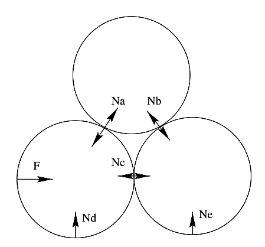
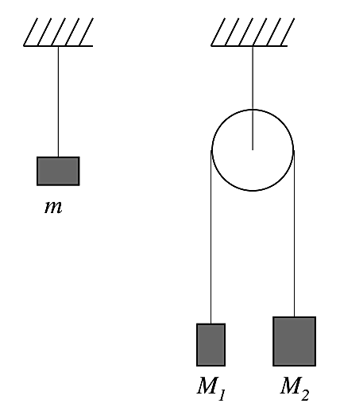
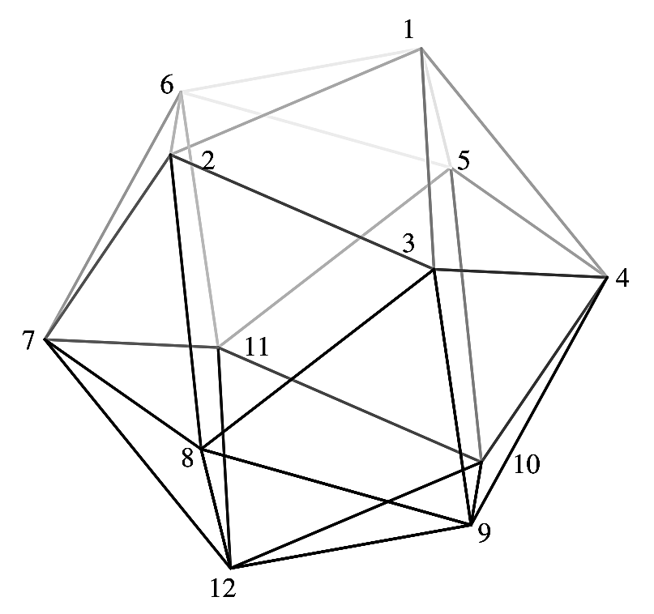
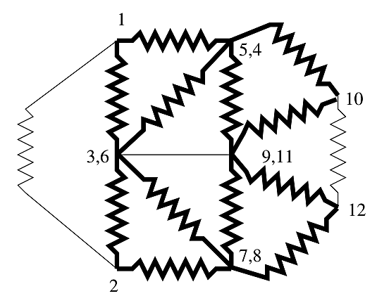

중력 외에 원통들에 작용하는 힘으로는 크기 $F$인 외력, 아래쪽 두 원통과 바닥 사이의 크기 $N_d$와 $N_e$인 수직항력, 그리고 원통들 사이에 작용하는 크기 $N_a$, $N_b$, $N_c$인 세 쌍의 힘이 있다(그림 참조).

가속도의 하한은 아래쪽 두 원통의 접촉이 끊어지는 조건, 즉 $N_c = 0$으로 주어진다. 그러면 오른쪽 원통에 작용하는 힘의 수평 성분은
\[Ma = N_b\sin(\pi/6) = N_b/2 \tag{1}\]이다. 위쪽 원통에 작용하는 힘의 연직 성분은
\[Mg = N_b\cos(\pi/6)+N_a\cos(\pi/6) \tag{2}\]이고, 왼쪽 원통에 대해서는
\[N_a\sin(\pi/6) = N_a/2 = F-Ma = 2Ma \tag{3}\]이다. $N_a$와 $N_b$를 소거하면
\[Mg = (2Ma+4Ma)\sqrt3/2 \tag{4}\]이고 $a_{min} = \dfrac{g}{3\sqrt3}$이다.
가속도가 어떤 값 이상으로 커지면 위쪽 원통은 오른쪽 원통과의 접촉을 잃는다. 이는 $N_b$가 0이 되는 것에 해당한다. 이 경우 위쪽 원통에 작용하는 힘의 연직 성분은
\[Mg = N_a\cos(\pi/6) \tag{5}\]이다. 수평 성분에 대해서는
\[Ma = N_a\sin(\pi/6) = N_a/2 \tag{6}\]을 얻고, $a_{max} = \tfrac12 2g/\sqrt3 = g/\sqrt3 = 3a_{min}$이다.
자기장 속에서 입자에 작용하는 힘은 $m\ddot{\mathbf r} = q\dot{\mathbf r}\times\vec B$이다. 원통 좌표계(cylindrical coordinates)에서 $\mathbf r = r\hat{\mathbf r}$, $\dot{\mathbf r} = \dot r\hat{\mathbf r}+r\dot\theta\hat\theta$, $\ddot{\mathbf r} = \ddot r\hat{\mathbf r}+2\dot r\dot\theta\hat\theta+r\ddot\theta\hat\theta-r\dot\theta^2\hat{\mathbf r}$이므로, 임의의 시각에 입자에 작용하는 힘의 접선 방향 성분은
\[m(2\dot r\dot\theta+r\ddot\theta) = q\dot rB \tag{7}\]이다. 식의 양변에 $r$을 곱하면
\[2mr\dot r\dot\theta+r^2\ddot\theta = qr\dot rB \tag{8}\]를 얻는다. 또는 좌변을 시간에 대한 완전 미분으로 묶으면
\[\frac{m\,d(r^2\dot\theta)}{dt} = \frac{qB(r)r\,dr}{dt} \tag{9}\]이다. 이는 입자의 각운동량(angular momentum) $L = mr^2\dot\theta$의 변화율이 원형 영역의 중심에 대한 토크와 같다는 것으로도 볼 수 있다. 입자가 원형 영역을 빠져나가는 데 걸리는 시간 동안 식 (9)를 적분하면
\[r^2\dot\theta\Big|_{t,r=0}^{t=T,r=R} = \int_{r=0}^{r=R}qBr\,dr \tag{10}\][역주: 식 (8)의 둘째 항과 식 (10)의 좌변에는 원문대로 $m$이 빠져 있다. 결론에는 영향이 없다.]
우변은 원형 영역을 지나는 전체 자기 선속(magnetic flux)의 $q/2\pi$배이며, 이 선속은 0이다. 따라서 입자가 영역을 떠나는 순간의 $\dot\theta$는 0이어야 한다. 입자의 전체 속도는 0이 아니므로(정적인 자기장은 일을 하지 않는다), 입자의 속도는 지름 방향 바깥쪽을 향해야 한다.
첫 번째 풀이:
다음과 같은 보조 문제를 생각하자.
문제: 그림에 두 가지 장치가 있다.

(첫 번째 장치에는 질량 $m$이 매달려 있다. 두 번째 장치에는 도르래가 매달려 있고, 그 위로 두 질량 $M_1$과 $M_2$가 걸려 있다.) 두 지지대 모두 아래쪽으로 가속도 $a_s$를 가진다. 두 경우에 맨 위 줄의 장력이 같아지려면 $m$은 $M_1$과 $M_2$로 나타내어 얼마여야 하는가?
답: 첫 번째 경우에는
\[mg-T = ma_s \tag{11}\]이다. 두 번째 경우, 지지대에 대한 $M_2$의 가속도를 $a$라 하자(아래쪽을 양으로 잡는다). 그러면
\[\begin{aligned}M_1g-\frac T2 &= M_1(a_s-a),\\ M_2g-\frac T2 &= M_2(a_s+a)\end{aligned} \tag{12}\]이다. $g'\equiv g-a_s$로 정의하면 이 세 식을 다음과 같이 쓸 수 있다.
\[\begin{aligned}mg' &= T,\\ M_1g' &= \frac T2-M_1a,\\ M_2g' &= \frac T2+M_2a\end{aligned} \tag{13}\]마지막 두 식으로부터 $4M_1M_2g' = (M_1+M_2)T$이다. 그러면 첫 번째 식으로부터
\[m = \frac{4M_1M_2}{M_1+M_2} \tag{14}\]이다. $a_s$의 값은 상관이 없다는 점에 주목하라. (사실상 중력 가속도가 $g'$인 세계에서 고정된 지지대를 가진 것과 같다.) 이 문제는 위쪽 줄에 관한 한 두 번째 경우의 두 질량 계를 질량 $m$ 하나로 동등하게 다룰 수 있음을 보여 준다. $\blacksquare$
이제 우리의 무한 애트우드 기계(Atwood machine)를 살펴보자. 맨 아래에서 시작한다. (계에 도르래가 $N$개 있고 $N\to\infty$라고 가정한다.) 맨 아래 질량을 $x$라 하자. 그러면 위의 문제에 의해 맨 아래 두 질량 $M$과 $x$는 유효 질량
\[f(x) = \frac{4x}{1+(x/M)} \tag{15}\]로 다룰 수 있다. 그다음 질량 $f(x)$와 그 위의 $M$의 조합을 유효 질량 $f(f(x))$로 다룰 수 있다. 이 반복을 계속하면, 결국 맨 위 도르래에 질량 $M$과 질량 $f^{(N-1)}(x)$가 걸려 있는 상황이 된다.
$N\to\infty$일 때 $f^N(x)$의 거동을 알아내야 한다. 이 거동은 $f(x)$의 그래프(독자가 그려 보기 바란다)를 보면 분명하다. ($x = 3M$이 $f$의 고정점, 즉 $f(3M) = 3M$임에 주목하라.) 어떤 $x$에서 시작하든(물론 $x = 0$인 경우는 제외하고) 반복은 $3M$에 가까워진다는 것이 분명하다. 따라서 우리의 무한 애트우드 기계는 (맨 위 질량에 관한 한) 두 질량 $M$과 $3M$만 있는 것과 동등하다.
그러면 맨 위 질량의 가속도는 (아래 방향 알짜힘)/(전체 질량) $= 2Mg/(4M) = g/2$임을 쉽게 알 수 있다.
참고: 지지대에 관한 한 전체 장치는 질량 $3M$과 동등하다. 따라서 지지대가 떠받치는 무게는 $3Mg$이다.
두 번째 풀이:
세계의 중력에 인자 $\eta$를 곱하면 모든 줄의 장력에도 마찬가지로 $\eta$가 곱해진다는 점에 주목하라. (장력, 즉 힘을 만드는 유일한 방법은 질량에 $g$를 곱하는 것이다.) 거꾸로, 장치를 다른 행성에 가져가서 모든 장력에 $\eta$가 곱해졌음을 발견한다면, 그곳의 중력은 $\eta g$여야 한다는 것을 안다.
첫 번째 도르래 위 줄의 장력을 $T$라 하자. 그러면 (도르래는 질량이 없으므로) 두 번째 도르래 위 줄의 장력은 $T/2$이다. 두 번째 도르래의 가속도를 $a_{p2}$라 하자. 그러면 두 번째 도르래는 사실상 중력이 $g-a_{p2}$인 세계에 있다. 두 번째 도르래 위의 줄을 손으로 잡고 아래쪽으로 $a_{p2}$로 가속한다고 상상하면(그래서 손이 새 세계의 원점에 있게 하면), 실제로는 아무것도 바꾸지 않은 것이므로 새 세계에서 이 줄의 장력은 여전히 $T/2$이다.
그런데 이 무한한 장치에서 맨 위 도르래를 제외한 모든 도르래로 이루어진 계는 원래의 모든 도르래로 이루어진 계와 같다. 따라서 첫 문단의 논리에 의해
\[\frac Tg = \frac{T/2}{g-a_{p2}} \tag{16}\]이어야 한다. 따라서 $a_{p2} = g/2$이다. (마찬가지로 두 번째와 세 번째 도르래의 상대 가속도는 $g/4$이고, 이하 마찬가지이다.) 그런데 $a_{p2}$는 맨 위 질량의 가속도이기도 하다. 따라서 답은 $g/2$이다.
$T = 0$도 식 (16)을 만족한다는 점에 주목하라. 그러나 이는 유한한 도르래 계의 끝에 질량 0을 매다는 것에 해당한다.
이 문제는 BAUPC'96 등 여러 곳에 나온 유명한 저항 정육면체 문제의 또 다른 변형일 뿐이다.

풀이는 두 가지가 있다. 두 번째 풀이가 훨씬 더 일반적이며, 대칭적인 다면체(또는 저항 그래프) 어느 것에나 적용된다.
요령은 어차피 퍼텐셜이 같은 점들을 도선으로 연결하여 회로도를 단순화하는 것이다. 단자가 꼭짓점 1과 2에 연결되어 있다고 하자. 그러면 대칭성을 고려하면 다음 점들의 집합은 각각 같은 퍼텐셜을 가진다.
회로도는 다음과 같이 줄어든다.

$1-2$ 저항과 $10-12$ 저항의 가운데 점을 등전위선 $3,6-9,11$에 단락시키면 더 단순화된다. 이제 1과 2 사이의 저항은 (오른쪽에서 왼쪽으로, Ohm 단위로) 다음과 같이 계산할 수 있다.
\[R_{1-2}/2 = (((1/2\|1/2)+1/2)\|1/2\|1/2)+1/2)\|1/2\|1/2 = 11/60 \tag{17}\]여기서 $a\|b = ab/(a+b)$이다.
점 1과 2 사이의 저항은 $11/30$ Ohm이다.
다음과 같은 전류 배치를 생각하자. 전류 $I$가 꼭짓점 1로 공급된다. 나머지 11개 꼭짓점은 외부 회로에 연결되어 각각 같은 전류, 즉 $I/(12-1)$을 빼낸다. 대칭성 논증에 의해 꼭짓점 1에서 뻗어 나가는 5개의 저항(모서리)은 모두 같은 전류, 즉 $I/5$를 나른다. 그러면 저항 $1-2$에 걸리는 전압은 $I/5\times1\,\mathit{Ohm}$이다.
이제 두 번째 배치를 생각하자. 이번에는 꼭짓점 2가 전류 $I$를 빼내고, 나머지 꼭짓점들($1, 3-12$)은 각각 $I/(12-1)$의 전류가 흘러 들어가도록 외부 회로에 연결되어 있다.
다음 단계는 두 배치를 중첩(superposition)하는 것이다. 저항이 선형, 즉 $V = \mathit{const}\times I$이므로 이것이 가능하다. 각 저항에 흐르는 전체 전류는 두 배치에서의 전류의 합이다. 전압 강하도 마찬가지이다. 꼭짓점 $3-12$에서 외부 회로로 흐르는 전류는 0이므로 그 회로들과의 연결은 끊어도 된다. 꼭짓점 1과 2를 통해 흐르는 전류는 크기가 같으며 $I+I/(12-1)$이다. 저항 $1-2$에 걸리는 전압 강하는 $V = 2\times I/5\times1\,\mathit{Ohm}$이다. 그러면 점 1과 2 사이에서 측정한 저항은
\[R = \frac{2I/5}{12/11I}\,\mathit{Ohm} = 11/30\,\mathit{Ohm} \tag{18}\]이다.
분자는 꼭짓점의 총수에서 1을 뺀 것과 같고, 분모는 저항(모서리)의 총수와 같다는 점에 주목하라. 후자는
\[\frac12\,\text{(꼭짓점의 수)}\times\text{(각 꼭짓점에서 뻗어 나가는 저항의 수)} \tag{19}\]와 같다. 다른 대칭적인 다면체에 대해 이 공식을 확인하는 것은 독자에게 맡긴다.
맨 위의 팽이부터 시작하여 팽이들의 각속력을 $\omega_i$라 하자(따라서 $\omega_1\equiv\omega$). 각 팽이의 대칭축에 대한 관성 모멘트(moment of inertia)를 $I$라 하자. 세차 운동(precession)의 각속력을 $\Omega$라 하자.
각 팽이에 $\vec\tau = d\vec L/dt$를 적용하겠다. 따라서 각 팽이에 대해 $d\vec L/dt$와 토크 $\vec\tau$를 구해야 한다.
$d\vec L/dt$:
(우리가 가정하는 것처럼) $\omega_i$가 충분히 크면, $i$번째 팽이의 각운동량은 본질적으로 크기가 $L_i = I\omega_i$이고 $\vec L_i$는 대칭축을 따라 향한다. (다시 말해, 느린 세차 각속도에 의한 각운동량은 무시할 수 있다. 아래에서 $\Omega\propto1/\omega$임을 보게 될 것이다.)
$\vec L_i$의 끝은 각속력 $\Omega$로 반지름 $L_i\sin\theta$인 원을 그린다. 따라서
\[\left|\frac{d\vec L_i}{dt}\right| = \Omega L_i\sin\theta = \Omega I\omega_i\sin\theta \tag{20}\]이고, $d\vec L_i/dt$는 원의 접선 방향을 향한다.
$\vec\tau$:
$N$개의 팽이 중 어느 것도 연직 방향으로 가속되지 않는다. 따라서 맨 아래 팽이에 작용하는 힘은 아래쪽 끝에서 위쪽으로 $NMg$(모든 팽이의 무게와 균형을 이루기 위해), 위쪽 끝에서 아래쪽으로 $(N-1)Mg$(나머지 $N-1$개의 팽이를 떠받치기 위해)이다. 따라서 맨 아래 팽이에 작용하는 (질량 중심에 대한) 토크의 크기는 $(2N-1)Mgr\sin\theta$이며, 여기서 $r$은 팽이 길이의 절반이다. 그 방향은 지면에 수직이다.
아래에서 두 번째 팽이에 작용하는 토크의 크기는 $(2N-3)Mgr\sin\theta$이고, 이런 식으로 계속되어 맨 위 팽이에 작용하는 토크는 $Mgr\sin\theta$임을 쉽게 알 수 있다.
따라서 $i$번째 팽이에 작용하는 토크의 크기는 $(2i-1)Mgr\sin\theta$이다.
$\vec\tau$를 $d\vec L_i/dt$와 같게 놓으면
\[(2i-1)Mgr\sin\theta = \Omega I\omega_i\sin\theta \tag{21}\]이다. 따라서
\[\omega_i = (2i-1)\omega_1\equiv(2i-1)\omega \tag{22}\]이다.
참고: 검산으로서, 이 $\omega_i$들이 $\vec\tau = d\vec L/dt$를 만족시킨다는 것을 독자가 확인할 수 있다. 여기서 $\vec\tau$와 $\vec L$은 전체 계의 질량 중심에 대한 전체 토크와 전체 각운동량이다.
$A$에서 도르래까지의 거리를 $r$, $A$로 가는 줄이 (연직선에 대해) 이루는 각을 $\theta$라 하자. 줄의 장력을 $T$라 하자($T$는 $r$과 $\theta$에 의존한다). 그러면 질량 $A$와 $B$에 대해 줄 방향으로 $F = ma$를 쓰면 각각
\[\begin{aligned}T-mg\cos\theta &= mr\dot\theta^2-m\ddot r,\\ T-mg &= m\ddot r\end{aligned} \tag{23}\]이다. 이를 결합하면 $2\ddot r = r\dot\theta^2-g(1-\cos\theta)$이다. $\cos\theta$에 작은 각 근사를 쓰면
\[2\ddot r = r\dot\theta^2-\frac12 g\theta^2 \tag{24}\]이다.
운동의 두 경우를 생각하자.
$A$를 툭 친 직후:
이때 $r$은 본질적으로 변하지 않는다. 따라서 운동은 근사적으로 길이 $\ell$인 진자의 운동이다. 그러므로 $\theta$와 $\dot\theta$는
\[\theta\approx\frac\epsilon r\sin\omega t,\qquad\text{그리고}\qquad\dot\theta\approx\frac{\omega\epsilon}{r}\cos\omega t \tag{25}\]의 꼴을 가진다. 여기서 $\omega = \sqrt{g/r}$이고 $r = \ell$이다. 이 식들을 식 (24)에 넣고 $\omega^2 = g/r$을 쓰면
\[2\ddot r = \frac{g\epsilon^2}{r^2}\cos^2\omega t-\frac{g\epsilon^2}{2r^2}\sin^2\omega t \tag{26}\]이다. $\sin^2\omega t$와 $\cos^2\omega t$ 항은 몇 주기에 걸쳐 평균하면 $1/2$이 된다. 따라서 몇 주기에 걸친 $\ddot r$의 평균값은
\[\ddot r = \frac{\epsilon^2g}{8r^2} \tag{27}\]이다. 이는 양수이다. 따라서 질량 $B$는 처음에 올라가기 시작한다.
$B$가 상당한 거리를 올라간 뒤:
이 경우에는 $r$이 변하므로 운동이 진자의 운동과 정확히 같아 보이지는 않는다1. 그러나 ($\epsilon$과 $r$이 모두 변했다는 점을 제외하면 — $\epsilon$이 어떻게 변하는지는 (b)에서 보이겠다) $\ddot r$은 여전히 식 (27)로 주어진다는 것이 밝혀진다. 왜 그런지 살펴보자.
식 (24)는 $\dot r\ne0$일 때도 여전히 성립한다. 주의가 필요한 양은 식 (25)의 $\theta$와 $\dot\theta$이다. 운동이 진자의 운동과 닮지 않았으므로 이 식들이 성립하는지는 분명하지 않다. 그러나 다음과 같은 이유로 $\theta$와 $\dot\theta$의 이 꼴은 여전히 성립한다.
어떤 시각에 $\dot r = v$라 하자. 일정한 속력 $v$로 아래쪽으로 움직이는 기준틀을 생각하자. 이 기준틀에서 $A$의 운동은 진자의 운동처럼 보인다. 이 기준틀에서의 중력 가속도는 여전히 $g$이다. 그리고 가장 중요한 것은, (곧 보겠지만 $\dot r$이 매우 작기 때문에) 한 주기 동안 $r$의 상대적 변화가 매우 작다는 것이다. 따라서 운동은 정해진 진동수 $\omega = \sqrt{g/r}$을 가진 진자의 운동처럼 보인다. 그리고 이 기준틀은 일정한 속력으로 움직이므로 이 기준틀에서의 $\ddot r$은 실험실 기준틀에서의 $\ddot r$과 같다. 따라서 식 (27)은 여전히 성립한다. 그러므로 $\ddot r$은 항상 양수이며, 따라서 $r$은 증가한다. 그러므로 자기 도르래에 부딪히는 것은 질량 $B$이다.
1 (b)에서 보겠지만, 시간이 좀 지나면 $\dot r$은 진자가 $\theta = 0$을 지날 때의 속력과 대략 같은 크기가 된다. 따라서 운동은 진자의 운동과 같지 않다.
식 (27)로부터 $B$의 처음 가속도는 $a_i = \epsilon^2g/8\ell^2$이다. 이것이 항상 가속도라면, $B$가 도르래에 부딪힐 때의 속력은 $\sqrt{2a_i\ell} = \sqrt{\epsilon^2g/4\ell}$일 것이다. 그러나 이는 옳지 않다. 시간이 지남에 따라 식 (27)의 $\epsilon$과 $\ell$이 모두 변하여, $B$가 올라감에 따라 $\ddot r$이 변하기 때문이다. $\ddot r$의 거동을 알아내려면 $\epsilon$이 $r$에 어떻게 의존하는지 알아내면 충분하다.
주장: 진폭 $\epsilon$은 $\epsilon\propto r^{1/4}$에 따라 $r$과 함께 변한다.
증명: $\theta = 0$에서 $A$의 운동 에너지를 살펴보아 $\epsilon$을 $r$의 함수로 구하겠다.
$\theta = 0$에서 $A$의 운동 에너지는 시간에 따라 줄어든다. 이는 $B$가 위로 움직이기 시작하므로 운동 에너지(KE)를 얻는다는 점에 주목하면 가장 쉽게 알 수 있다. 따라서 $A$는 KE를 잃어야 한다. ($\theta = 0$인 순간을 생각하자. 계의 전체 퍼텐셜 에너지는 처음과 같다. 따라서 $B$가 얻은 KE는 $A$가 잃은 KE와 같다.)
$\theta = 0$에서 $A$와 $B$의 KE 사이의 이 관계는 다음과 같이 나타낼 수 있다.
\[\frac{d}{dr}\left(\frac12 mr^2\dot\theta^2_{\theta=0}+\frac12 m\dot r^2\right) = -\frac{d}{dr}\left(\frac12 m\dot r^2\right) \tag{28}\]이제 $d\left(\frac12 m\dot r^2\right)$은 $B$에 해 준 일이며, 이는 $dW_B = (T-mg)dr$이다. 식 (23)과 (27)로부터
\[\frac{dW_B}{dr} = T-mg = \frac{mg\epsilon^2}{8r^2} \tag{29}\]를 얻는다. 여기서 둘째 등호를 얻기 위해 몇 주기에 걸쳐 평균을 취했다.
또한 식 (25)로부터 $\omega = \sqrt{g/r}$일 때 $\dot\theta^2_{\theta=0} = (\epsilon\omega/r)^2$이다. 따라서 식 (28)은
\[\frac{d}{dr}\left(\frac{mg\epsilon^2}{2r}\right) = -2\frac{dW_B}{dr} = -\frac{mg\epsilon^2}{4r^2} \tag{30}\]이 된다. 미분하고 정리하면
\[\frac1\epsilon\frac{d\epsilon}{dr} = \frac r4 \tag{31}\]를 얻는다. 적분한 다음 지수를 취하면 $\epsilon_r\equiv\epsilon(r) = Cr^{1/4}$이다. 따라서 $r$이 이처럼 매우 느리게 변할 때 진폭 $\epsilon$은 $r^{1/4}$처럼 변한다는 것을 알 수 있다. $\blacksquare$
[역주: 원문 그대로이다. 식 (30)으로부터 실제로는 $\frac1\epsilon\frac{d\epsilon}{dr} = \frac{1}{4r}$이며, 위의 결과 $\epsilon\propto r^{1/4}$은 이것과 일치한다.]
초기 조건 $\epsilon_\ell\equiv\epsilon$으로부터
\[\epsilon_r = \epsilon\left(\frac r\ell\right)^{1/4} \tag{32}\]이다. 그러면 식 (27)의 가속도는
\[\ddot r = \left(\frac{\epsilon^2g}{8\sqrt\ell}\right)\frac{1}{r^{3/2}} \tag{33}\]가 된다. $\dot r$을 곱하고 적분하면
\[\frac{\dot r^2}{2} = \frac{\epsilon^2g}{4\ell}-\left(\frac{\epsilon^2g}{4\sqrt\ell}\right)\frac{1}{\sqrt r} \tag{34}\]이다. 여기서 우변의 적분 상수는 $r = \ell$일 때 $\dot r = 0$이라는 조건으로 정했다.
마지막으로 $r = 2\ell$을 넣으면
\[\dot r_{r=2\ell} = \sqrt{\frac{\epsilon^2g}{2\ell}\left(1-\frac{1}{\sqrt2}\right)} \tag{35}\]를 얻는다.
참고: 이 $\dot r$은 $\theta = 0$에서 ‘진자’의 각속력, 즉 $r\dot\theta = \epsilon_r\omega_r$과 같은 크기 정도이다. 이 값은 (1 정도의 인자를 제외하면) $\epsilon_\ell\omega_\ell = \epsilon\sqrt{g/\ell}$과 같기 때문이다.